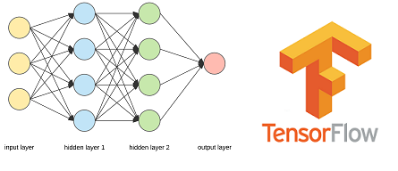

Fri 22 May 2020
In this project I used H2O AutoML to predict energy consumption. AutoML is a function in H2O that automates the process of building a large number of models, with the goal of finding the "best" model without any prior knowledge or effort by the Data Scientist. For more information see oficial
documentation.
This was a case study for Data Science Academy and all the files you see in my repository.
Continue reading »
Thu 21 May 2020
Neste projeto, que foi uma competição no Kaggle, criei um modelo para classificar automaticamente
variações genéticas. Utilizei Deep Learning como técnica de modelagem preditiva.

Continue reading »
Tue 19 May 2020
In this project I used python Web Scraping to create a wordcloud with the trending words of 10 recent articles content from Coin Telegraph website. It's a media website covering blockchain technology and crypto assets.
Continue reading »
Sun 17 May 2020
Slowly Changing Dimension é um termo utilizado em teorias de Data Management
e Data Warehousing para grupos de dados lógicos como informações de produtos, clientes,
etc que mudam lentamente ao longo do tempo. Nesse exemplo vou implementar o SCD tipo 2 utilizando Hive e Spark.
Continue reading »
Wed 15 Apr 2020
Neste projeto, criei um modelo de Machine Learning para prever o Customer Churn em uma Operadora de Telecom.
Os datasets e script estão no meu repositório
Continue reading »
Tue 10 Mar 2020
Nesse projeto fiz um script em Python usando a biblioteca do Selenium para buscar
coordenadas geográficas no Google Maps.
Continue reading »